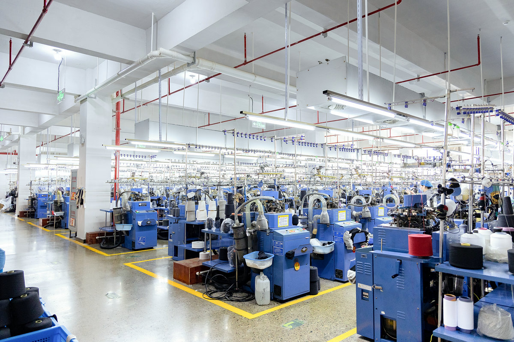

BRAND-READY SOCK PRODUCTION
Private Label Socks Manufacturer for Retail Collections
Develop branded socks with custom construction, logos, labels, hangtags, packaging, sampling and bulk manufacturing in China.
FOR BRANDS, RETAILERS & DISTRIBUTORS
Build a Private Label Program Around Your Market
Send your product direction, target customer, expected quantity and branding requirements. We review the construction and commercial details before confirming the appropriate sample, MOQ and quotation route.
- Custom yarn, color, sizing and sock construction
- Knitted or applied brand elements based on the design
- Labels, hangtags and retail packaging development
- Reference sample, artwork and tech-pack review
- Approved sample used as the bulk production reference
DEVELOPMENT PROCESS
From Brand Brief to Bulk Order
- 01
Buyer Brief
Define market, product, quantity, size range, branding and packaging.
- 02
Factory Review
Confirm feasibility, sample route, applicable MOQ and quotation inputs.
- 03
Sample Approval
Review construction, color, fit, branding and pack presentation.
- 04
Bulk Production
Manufacture, inspect, pack and prepare the approved program for shipment.
FACTORY PRODUCTION PROOF
Real Sock Manufacturing Equipment
This production-floor image comes from Zhuji Rongxing's factory materials and shows the knitting environment supporting custom and private-label programs.
Review our factory profile →
PRIVATE LABEL FAQ
Questions from Sock Buyers
What can be customized?
Yarn, construction, colors, sizing, logos, labels, hangtags and retail packaging can be discussed against your brief.
How is MOQ confirmed?
MOQ depends on the product specification and is confirmed after reviewing yarn, construction, colors, sizes and packaging.
Can we start from a reference?
Yes. Send artwork, a tech pack, image or physical sample for a feasibility review.
Do you support specialty socks?
Yes. Review our shea butter feather yarn sock program for a focused soft-touch collection.
SEASONAL PLANNING
Preparing a Fall/Winter 2026 Sock Order?
Use our Fall 2026 order trends and sourcing timeline to plan color direction, warm constructions, holiday packaging, samples and reorder options before confirming the range.
Start Your Private Label Sock Program
Share the buyer brief and receive a factory assessment for sampling and production.
Send Your Requirements